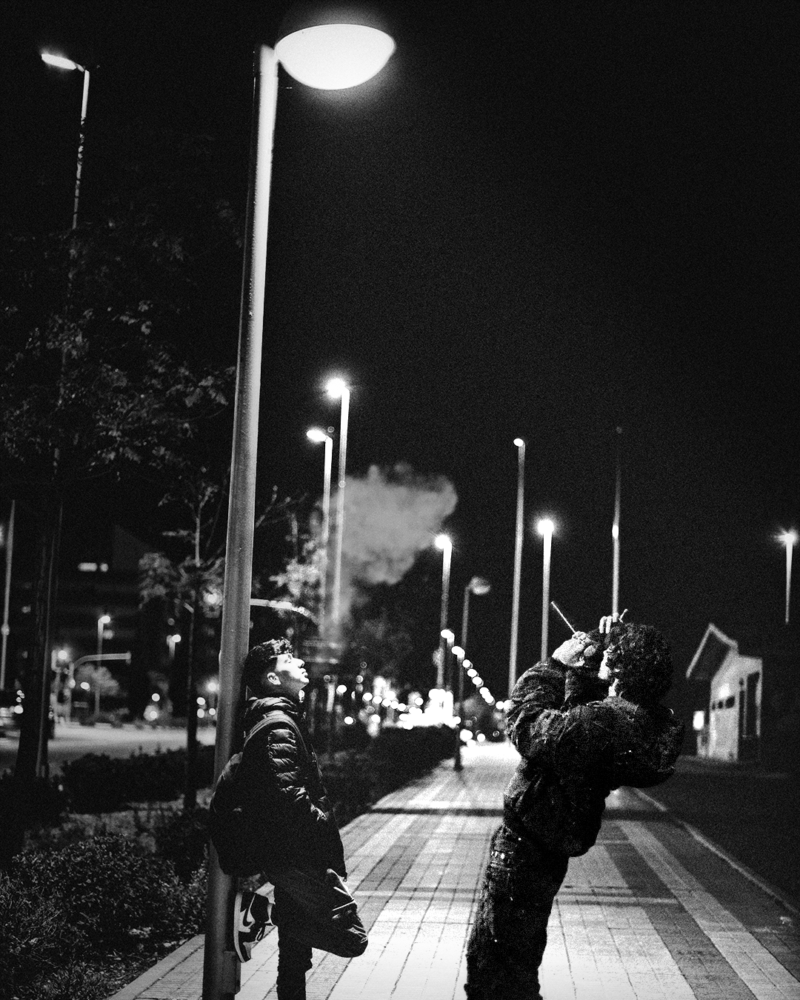

Choisir une ambiance nocturne
J’ai travaillé à partir d’une photographie urbaine prise de nuit, dominée par les tons noirs et blancs, les lumières des réverbères et une forte atmosphère de rue.
Un site web non officiel pour l’artiste YUSTON XIII : une ambiance sombre, sa biographie, ses titres et un formulaire de contact qui envoie vraiment les messages.

Je voulais une affiche qui ressemble à l’univers de l’artiste : sombre, avec un style street et un visuel accrocheur.
C’est un projet non officiel, créé pour m’entraîner à construire une affiche qui attire l’œil et qui communique efficacement le message.
J’ai travaillé à partir d’une photographie urbaine prise de nuit, dominée par les tons noirs et blancs, les lumières des réverbères et une forte atmosphère de rue.
Les silhouettes ont été placées au premier plan pour créer une composition dynamique et donner à l’affiche un style street crédible.
J’ai utilisé un contraste marqué, une typographie sobre et des éléments graphiques rouges pour renforcer le titre et attirer immédiatement le regard.
Le travail de retouche, d’éclairage et de composition a permis d’harmoniser les différents éléments et d’obtenir une affiche lisible, percutante et cohérente.
← Tous les projets ← Projet précédent : Chopard Projet suivant : Affiche → Me contacter →